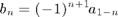

Filters
Author: Chenzhe Diao
Implementation of Dual Tree filters and help functions to construct filters, including 2D filters constructed by tensor product structure.
Contents
Data Structure of filters
- 1D Filter:
filter1d.filter : array of filter
filter1d.start_pt : filter array starting point- 2D Filter:
filter2d.row_filter: array of row filter
filter2d.col_filter: array of col filter
filter2d.row_start_pt: row filter array starting point
filter2d.col_start_pt: col filter array starting point- Filter Bank
Implemented as an array of filers: [lowpass, highpass1, highpass2, ...]. We always put lowpass at the first.
1x(s+1) struct array with fields:
filter
start_pt1x(s+1) struct array with fields:
row_filter
row_start_pt
col_filter
col_start_pt1D Haar Filter
[HaarLow, HaarHigh] = Haar1d
HaarLow =
filter: [0.5000 0.5000]
start_pt: 0
HaarHigh =
filter: [-0.5000 0.5000]
start_pt: 0
CQF
Generate highpass filter from lowpass filter in CQF pair.

HaarHigh = CQF(HaarLow)
HaarHigh =
filter: [-0.5000 0.5000]
start_pt: 0
Convolution of 2 1D filters
f = convfilter1d( HaarLow, HaarHigh )
f =
start_pt: 0
filter: [-0.2500 0 0.2500]
1D Dual Tree Filter Banks
The Filter Banks given by Selesnick
- FirstStageFilter1d.m
- FirstStageFilterShift1d.m
- Tree1Filter1d.m
- Tree2Filter1d.m
- First Stage Filter Bank for Tree 1:
FS_Filter = FirstStageFilter1d; lowpass = FS_Filter(1) highpass = FS_Filter(2)
lowpass =
filter: [-0.0625 0.0625 0.4921 0.4921 0.0625 -0.0625 0.0079 0.0079]
start_pt: -3
highpass =
filter: [0.0079 -0.0079 -0.0625 -0.0625 0.4921 -0.4921 0.0625 0.0625]
start_pt: -3
- First Stage Filter Bank for Tree 2. The lowpass is a shifted version of Tree 1.
FS_Filter2 = FirstStageFilterShift1d; lowpass = FS_Filter2(1) highpass = FS_Filter2(2)
lowpass =
filter: [-0.0625 0.0625 0.4921 0.4921 0.0625 -0.0625 0.0079 0.0079]
start_pt: -2
highpass =
filter: [-0.0079 0.0079 0.0625 0.0625 -0.4921 0.4921 -0.0625 -0.0625]
start_pt: -4
- Later filter bank for Tree 1:
Filter1 = Tree1Filter1d; lowpass = Filter1(1) highpass = Filter1(2)
lowpass =
filter: [0.0249 0 -0.0625 0.1654 0.5376 0.4154 0 -0.0808]
start_pt: -4
highpass =
filter: [0.0808 0 -0.4154 0.5376 -0.1654 -0.0625 0 0.0249]
start_pt: -2
- Later filter bank for Tree 2:
Filter2 = Tree2Filter1d; lowpass = Filter2(1) highpass = Filter2(2)
lowpass =
filter: [-0.0808 0 0.4154 0.5376 0.1654 -0.0625 0 0.0249]
start_pt: -2
highpass =
filter: [-0.0249 0 0.0625 0.1654 -0.5376 0.4154 0 -0.0808]
start_pt: -4
Generate 2D Filter/Filter Bank by Tensor Product
- FilterTensor.m
- FilterTensorMultiple.m
- Generate a 2D filter with 2 1D filters
[RowFilter, ColFilter] = Haar1d; filter2d = FilterTensor( RowFilter, ColFilter )
filter2d =
row_filter: [0.5000 0.5000]
row_start_pt: 0
col_filter: [-0.5000 0.5000]
col_start_pt: 0
- Generate 2D filter bank with 2 1D filter banks
RowFilterBank = Tree1Filter1d; ColFilterBank = Tree2Filter1d; FilterBank2d = FilterTensorMultiple(RowFilterBank, ColFilterBank)
FilterBank2d =
1x4 struct array with fields:
row_filter
row_start_pt
col_filter
col_start_pt
2D Dual Tree Filter Banks
- DualTreeFilter2d.m
[FS_FilterBanks, FilterBanks] = DualTreeFilter2d
FilterBanks{1}{1} % 2D filter bank (1 lowpass + 3 highpass), use tree 1 filter bank for both rows and columns.
FS_FilterBanks =
{1x2 cell} {1x2 cell}
FilterBanks =
{1x2 cell} {1x2 cell}
ans =
1x4 struct array with fields:
row_filter
row_start_pt
col_filter
col_start_pt
Both FS_FilterBanks and FilterBanks are 2x2 cells. There is one 2D filter bank in each cell. (Each 2D filter bank satisfies PR condition by itself.) FS_FilterBanks is for first stage filter banks. FilterBanks are for later stages.
FilterBanks{i}{j} is the filter bank generated by: using Tree i filter bank for rows, Tree j filter bank for columns.
2D Dual Tree Split Highpass Filter Banks
- DualTreeFilter2d_SplitHipass.m
The same as DualTreeFilter2d.m above, for multiple hipass filters in each tree.
[FS_FilterBanks, FilterBanks] = DualTreeFilter2d_SplitHipass
FS_FilterBanks =
{1x2 cell} {1x2 cell}
FilterBanks =
{1x2 cell} {1x2 cell}